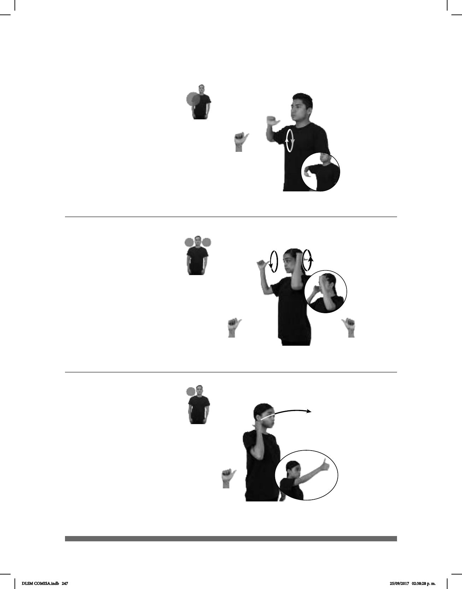

247
1
2
(A-43)
_____muy
pos-MI ABUELO+MUJER pos-SU BAÚL ANTIGUO
(A-44)
pos-MI AMIGO ARGENTINA ANTROPOLOGÍA pro-ELLOS ESTUDIAR YA
Mis amigos argentinos estudiaron antropología.
(A-45)
AYER APOCALIPSIS BIBLIA pro-YO LEER
Ayer leí el Apocalipsis de la Biblia.
Seña: SM
A.1
Palma oblicua hacia
enfrente y hacia abajo.
A la altura del pecho.
La mano se mueve
formando círculos hacia el frente
repetidamente.
Mejillas
adj. Que es de hace
mucho tiempo, que se conserva
desde el pasado o es muy viejo.
Seña: SB
MD y MB A.4
MD palma hacia la
izquierda. MB palma hacia la dere-
cha.
MD y MB a la altura de
las sienes.
MD y MB se mueven
formando círculos alternadamente.
sust. f. Ciencia que trata
de los aspectos biológicos y sociales
del ser humano.
Seña: SM
A.1
Palma hacia la izquierda.
A la altura del cuello del lado
derecho.
La mano se mueve formando
un arco hacia enfrente.
Cabeza ligeramente
ladeada, ojos semicerrados, labios soplando.
sust. m. Último libro del Nuevo
Testamento.
La seña se usa en la
comunidad sorda catolica.
DLSM COMISA.indb 247 25/09/2017 02:38:28 p. m.